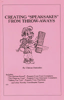

Speaksakes
1/19/2011
Comment & Question: Clinton, My name is Bryce Gardner and you may or may not remember me from FCM (you made a custom figure for me when I was a teen.). Years ago you sold a booklet on how to make items into figures (wagon, bat, etc.) I'm guessing you are not printing it anymore, so are you able to run that off and give me a price? Eagerly awaiting your reply, Bryce (who had a former buddy named Rusty Styles).
* * * * *
* * * * *
{kind=link}

From Mr. D: Of course, I remember you, Bryce. In fact I have an early photo of you with the figure I built for you in my photo Gallery! (Click here and scroll all the way to the bottom of the first page.) As for the booklet you are referring to, that's my little "Creating Speaksakes" booklet. It was actually prepared for one of my lectures presented at FCM and elsewhere. No, I'm not printing that booklet any more, but I do still have a handful of copies. $5.00 each. I'll also give two copies away as today's prize(s). You receive one, and the other goes, by drawing, to Steve Case.